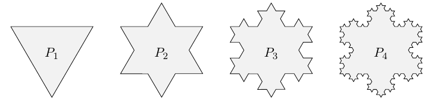

Exercices corrigés - Suites de nombres réels ou complexes - suites récurrentes
Suites arithmétiques, géométriques, arithmético-géométriques
Exercice 1 - Raison et suite arithmétique ou géométrique ♡ [Signaler une erreur] [Ajouter à ma feuille d'exos]
Enoncé 
Soit $(v_n)_{n\geq 0}$ une suite arithmétique telle que $v_3=3$ et $v_6=24$.
- Calculer le premier terme $v_0$ et la raison de cette suite.
- Même question si on suppose que la suite est géométrique.

Enoncé
On place un capital $w_0=1500$ euros avec un taux d'intérêt égal à $4,5\%$ par an et on note $w_n$ le capital obtenu au bout de $n$ années.
- Donner la nature de la suite $w$ et exprimer $w_n$ en fonction de $n$.
- Calculer la valeur du capital au bout de $10$ ans.
- Au bout de combien d'années le capital initial aura-t-il doublé ?
Enoncé
Fin 2020, un club de rugby comptait 7000 abonnés. A la fin de chaque année, le club constate que $20\%$ des abonnés ne se réabonnent pas et que 4000 nouveaux abonnés arrivent. Le stade comporte 19000 places, et le club voudrait savoir s'il sera nécessaire de l'agrandir pour pouvoir accueillir tous les abonnés.
On note $a_n$ le nombre d'abonnés à la fin de l'année $2020+n$.
- Préciser $a_0$ et expliquer pourquoi, pour tout entier naturel $n$, $a_{n+1}=0,\!8 a_n+4000$. On va ensuite, par deux méthodes différentes, déterminer la limite de $(a_n)$.
- Méthode 1 :
- On pose, pour $n\geq 0$, $b_n=a_n-20000$. Justifier que $(b_n)$ est une suite géométrique, et préciser sa raison.
- Quelle est la limite de la suite $(b_n)$?
- Quelle est la limite de la suite $(a_n)$?
- Méthode 2 :
- Démontrer que la suite $(a_n)$ est majorée par 20000.
- Démontrer que la suite $(a_n)$ est croissante.
- En déduire que la suite $(a_n)$ est convergente. Quelle est sa limite?
- Le club devra-t-il agrandir son stade? Si oui, écrire un algorithme sous Python précisant quand devra être finie l'agrandissement.
Enoncé
Soient $a,b\in\mathbb R$ avec $a\neq 1$ et $(u_n)$ la suite définie par $u_{n+1}=au_n+b$.
- Quelle est la seule limite possible $l$ de la suite $(u_n)$?
- Soit $v_n=u_n-l$. Montrer que $(v_n)$ est une suite géométrique, et en déduire la nature de la suite $(u_n)$.
- Application : on considère un carré de côté 1. On le partage en 9 carrés égaux, et on colorie le carré central. Puis, pour chaque carré non-colorié, on réitère le procédé. On note $u_n$ l'aire coloriée après l'étape $n$. Quelle est la limite de $(u_n)$?
Enoncé
Soit la suite réelle $(u_n)$ définie par
$$u_0=3\quad\textrm{ et }\quad u_{n+1}=\frac{4u_n-2}{u_n+1}.$$
Pour $x\neq -1$, on pose $f(x)=\frac{4x-2}{x+1}$.
- Étudier les variations de $f$ sur $[1,+\infty[$.
- Démontrer que, pour tout $n\geq 0$, on a $u_n > 1$.
- On définit une suite $(v_n)$ à partir de $(u_n)$ en posant, pour tout $n\in\mathbb N$, $$v_n=\frac{u_n-2}{u_n-1}.$$ Démontrer que $(v_n)$ est une suite géométrique, et donner l'expression de son terme général.
- En déduire la valeur de $u_n$ en fonction de $n$.
- Justifier enfin que $(u_n)$ converge et déterminer sa limite.
Enoncé
On considère un triangle équilatéral $P_1$ de côté $1$. Chaque côté est ensuite divisé en trois parties égales et on construit à partir du segment situé au milieu de chaque côté un nouveau triangle équilatéral à l'extérieur de $P_1$. On obtient ainsi un polygone $P_2$. En procédant de la même façon à partir de $P_2$, on trouve un polygone $P_3$, puis en itérant le processus, on construit une suite de polygones $P_n$.

On note, pour tout entier \(n\) :
- \(c_n\) le nombre de côtés de \(P_n\) ;
- \(l_n\) la longueur d’un côté de \(P_n\) ;
- \(p_n\) le périmètre de \(P_n\) ;
- \(A_n\) l’aire de \(P_n\).
- Montrer que la suite $(c_n)$ est une suite géométrique et en déduire sa valeur en fonction de $n$ pour tout entier naturel $n$ non nul.
- Exprimer $(l_n)$ en fonction de $n$. En déduire que $(p_n)$ tend vers $+\infty$.
- Démontrer que \(A_1=\dfrac{\sqrt{3}}{4}\).
- En remarquant que l’on construit \(P_{n+1}\) en ajoutant sur chaque côté de \(P_n\) un triangle équilatéral de côté \(l_{n+1}\) , démontrer l’égalité pour tout entier \(n\geqslant 1\) : \[A_{n+1}=A_n+\frac{3\sqrt{3}}{16}\times\left(\frac{4}{9}\right)^n.\]
- En déduire l’égalité pour tout entier \(n\geqslant 1\) : \[A_n=\frac{\sqrt{3}}{4}+\frac{3\sqrt{3}}{20}\left(1-\left(\frac{4}{9} \right)^{n-1} \right).\]
- Quelle est la limite de \((A_n)\), lorsque \(n\) tend vers \(+\infty\) ?
Suites récurrentes
Enoncé
Soit $u$ la suite définie par $u_0\in ]0,1]$ et par la relation de récurrence
$$u_{n+1} = \frac{u_n}{2} + \frac{u_n^2}{4}.$$
- Démontrer que pour tout $n\in \mathbb N$ on a $0<u_n\leq 1$.
- Démontrer que la suite est monotone.
- En déduire qu'elle est convergente et déterminer sa limite.
Enoncé
Soit $(u_n)$ la suite définie par $u_0=-1$ et pour tout entier naturel $n$, $u_{n+1}=f(u_n)$ où $f$ est la fonction définie sur $[-2,+\infty[$ par $f(x)=2\sqrt{x+3}$.
- Étudier les variations de $f$ sur $[-2,+\infty[$.
- Démontrer par récurrence que la suite $(u_n)$ est croissante, minorée par $-1$ et majorée par $6$.
- Justifier que $(u_n)$ converge vers un réel $\ell$, puis déterminer $\ell$.
Enoncé
Soit $f$ la fonction définie sur $[0,+\infty[$ par $f(x)=\frac x2+\sqrt{x}$ et $(u_n)$ une suite définie par $u_0\geq 0$ et $u_{n+1}=f(u_n)$.
- Quelles sont les limites possibles de la suite $(u_n)$?
- Vérifier que l'intervalle $[0,4]$ est stable par $f$.
- On suppose que $u_0=1$. Démontrer que $(u_n)$ est convergente, et déterminer sa limite.
Enoncé
Soit $(u_n)$ la suite définie par $u_0=3$ et $u_{n+1}=(u_n^2+2)/3$.
- Démontrer que $u_n\geq 3$ pour tout $n\in\mathbb N$.
- Démontrer que la suite $(u_n)$ est croissante.
- On suppose que la suite $(u_n)$ converge. Quelles peuvent être les limites possibles de $(u_n)$?
- En déduire que la suite $(u_n)$ tend vers $+\infty$.
Exercice 11 - Fonction croissante - avec indications ♡ [Signaler une erreur] [Ajouter à ma feuille d'exos]
Enoncé
On considère la suite récurrente $u_{n+1}=f(u_n)$ avec $f(x)=x^2+\frac{3}{16}$ et $u_0\geq 0$.
- Étudier $f$ et le signe de $f(x)-x$. Quelles sont les limites possible de $(u_n)$?
- On suppose $u_0\in[0,1/4]$. Montrer que $u_n\in[0,1/4]$ pour tout $n$, puis que $(u_n)$ est croissante. Quelle est la nature de $(u_n)$ (si elle est convergente, préciser sa limite)?
- On suppose $u_0\in[1/4;3/4]$. Montrer que $(u_n)$ est décroissante et minorée. Quelle est la nature de $(u_n)$ (si elle est convergente, préciser sa limite)?
- On suppose $u_0>3/4$. Montrer que $(u_n)$ est croissante. Quelle est la nature de $(u_n)$ (si elle est convergente, préciser sa limite)?
Exercice 12 - Suite récurrente et fonction logarithme ♡ [Signaler une erreur] [Ajouter à ma feuille d'exos]
Enoncé
On note $f$ la fonction définie sur $]0,+\infty[$ par $f(x)=1+\ln x$. Soit $u$ la suite définie par son premier terme $u_0\geq 1$ et par la relation de récurrence $u_{n+1}=f(u_n)$.
- Démontrer que la suite est bien définie et qu'elle est minorée par 1.
- Étudier le signe de $f(x)-x$ sur $[1,+\infty[$.
- Étudier la monotonie de $u$.
- En déduire que $(u_n)$ est convergente, et donner sa limite.
Exercice 13 - Fonction décroissante - avec indications ♡ [Signaler une erreur] [Ajouter à ma feuille d'exos]
Enoncé
Soit $f:]0,+\infty[\to]0,+\infty[$ définie par $f(x)=1+\frac{2}{x}$. On considère la suite récurrente
$(u_n)$ vérifiant $u_{n+1}=f(u_n)$ et $u_0=1$.
- Étudier le sens de variation de $f$ sur $[1,3]$ et montrer que l'intervalle $[1,3]$ est stable par $f$. Que peut-on en déduire sur $(u_n)$?
- Soit $(v_n)$ et $(w_n)$ les suites définies par $v_{n}=u_{2n}$ et $w_n=u_{2n+1}$. Montrer que $(v_n)$ est croissante.
- Démontrer que $(w_n)$ est décroissante.
- En déduire que $(v_n)$ et $(w_n)$ sont convergentes et déterminer leur limite respective.
- Quelle est la nature de la suite $(u_n)$?
Exercice 14 - Fonction décroissante et deux suites extraites qui ne convergent pas vers la même limite ♡ [Signaler une erreur] [Ajouter à ma feuille d'exos]
Enoncé
Soit $f(x)=(1-x)^2$ et la suite $(u_n)$ définie par $u_0=1/2$ et $u_{n+1}=f(u_n)$.
- Démontrer que $[0,1]$ est stable par $f$. Quel est le sens de variation de $f$ sur $[0,1]$?
- On pose $g=f\circ f$. Quel est le sens de variation de $g$ sur $[0,1]$?
- Résoudre l'équation $g(x)=x$.
- Pour $n\geq 0$, on pose $v_n=u_{2n}$ et $w_n=u_{2n+1}$, de sorte que $v_{n+1}=g(v_n)$ et $w_{n+1}=g(w_n)$. Démontrer que $(v_n)$ est croissante, et déterminer sa limite. Démontrer que $(w_n)$ est décroissante, et déterminer sa limite.
- Que peut-on en déduire sur la suite $(u_n)$?
Exercice 15 - Fonction croissante - sans indication ♡ [Signaler une erreur] [Ajouter à ma feuille d'exos]
Enoncé
Étudier les suites récurrentes suivantes :
- $u_0>0$ et $u_{n+1}=u_n+\frac{1}{u_n}$;
- $u_0=1$ et $u_{n+1}=\sqrt{1+u_n}$. Que se passe-t-il si on choisit $u_0=2$?
Exercice 16 - Fonctions décroissantes - sans indications ♡ [Signaler une erreur] [Ajouter à ma feuille d'exos]
Enoncé
Étudier les suites récurrentes suivantes :
- $u_0=1/2$ et $u_{n+1}=(1-u_n)^2$.
- $u_0=1/2$ et $u_{n+1}=\sqrt{1-u_n}$.
Enoncé
Le but de l'exercice est d'étudier, pour certaines valeurs de $u_0$, le comportement de la suite récurrente $(u_n)$ vérifiant la relation $u_{n+1}=f(u_n)$, avec $f(x)=x^2-1$.
- Quelles sont les limites possibles de la suite $(u_n)$?
- On suppose pour commencer que $u_0>(1+\sqrt 5)/2$.
- Démontrer que, pour tout $n\in\mathbb N$, on a $u_n>(1+\sqrt 5)/2$.
- Démontrer que la suite $(u_n)$ est croissante.
- Quelle est la nature de la suite $(u_n)$?
- Écrire une fonction Python $\verb+depasse(M,u0)+$ qui donne le premier entier $n$ tel que $u_n\geq M$ pour une valeur de $u_0$ donnée.
- On suppose désormais que $u_0\in [-1,0]$.
- Démontrer que, pour tout $n\in\mathbb N$, $u_n\in [-1,0]$.
- On suppose plus particulièrement que $u_0\in \left [ -1,\frac{1-\sqrt 5}2\right[$ et on pose, pour tout $n\in\mathbb N$, $v_n=u_{2n}$ et $w_n=u_{2n+1}$. On définit aussi la fonction $g(x)=f\circ f(x)$.
- Démontrer que $g$ est croissante sur $[-1,0]$.
- Étudier le signe de $g(x)-x$.
- En déduire que la suite $(v_n)$ est décroissante. En déduire que $(v_n)$ est convergente, et déterminer sa limite.
- Démontrer que $(w_n)$ est convergente, et déterminer sa limite.
- Que dire de la suite $(u_n)$?
- On suppose que $u_0\in \left ] \frac{1-\sqrt 5}2,0\right[$. Quelle est la nature de la suite $(u_n)$? (on pourra déterminer un intervalle contenant $u_1$).
- On suppose que $u_0\in ]0,1[$. Quelle est la nature de la suite $(u_n)$?
Exercice 18 - Suites récurrentes et équation fonctionnelle ♡ [Signaler une erreur] [Ajouter à ma feuille d'exos]
Enoncé
Dans cet exercice, on se propose de déterminer les fonctions $f:\mathbb R_+^*\to\mathbb R,$ continues sur $\mathbb R_+^*$ telles que
$$\forall x\in\mathbb R_+^*,\ f(x)=f\left(\frac{x^2+16}{2x}\right).$$
- On considère les fonctions $g$ et $h$ définies sur $\mathbb R_+^*$ par les formules
$$g(x)=\frac{x^2+16}{2x}\textrm{ et }h(x)=g(x)-x.$$
- Dresser le tableau de variations de $g$, déterminer $g(4)$ et préciser les limites de $g$ en $0^+$ et en $+\infty.$
- Étudier le signe de $h$ sur $\mathbb R_+^*$.
-
- Soit $x\in[4,+\infty[$ et soit la suite $(u_n)$ définie par $u_0=x$ et $\displaystyle u_{n+1}=\frac{u_n^2+16}{2u_n}$. Justifier que $(u_n)$ est ben définie.
- Démontrer que la suite $(u_n)$ est convergente et déterminer sa limite.
- En déduire que, pour tout $x\in [4,+\infty[$, $f(x)=f(4)$.
- En procédant de manière analogue à la question précédente, démontrer que, pour tout $x\in]0,4[$, on a $f(x)=f(4)$.
- Conclure.
Exercice 19 - Un petit problème sur les suites récurrentes ♡ [Signaler une erreur] [Ajouter à ma feuille d'exos]
Enoncé
Dans cet exercice, $f$ désigne la fonction définie sur $\mathbb R$ par
$$f(x)=x^2+x.$$
On note $\mathcal C_f$ la courbe représentative de $f$ dans un repère orthonormé $(O,\vec i,\vec j)$.
On considère également la suite récurrente $(u_n)_{n\geq 1}$ définie par $u_1\in\mathbb R$ et $u_{n+1}=f(u_n)$.
- Dresser le tableau de variations de $f$, dessiner rapidement $\mathcal C_f$ en précisant la tangente à l'origine.
- On suppose dans cette question que $u_1\in [-1/2,0]$. Justifier que $[-1/2,0]$ est stable par $f,$ puis démontrer que la suite $(u_n)$ converge en précisant sa limite.
- On suppose dans cette question que $u_1>0.$ Démontrer que $(u_n)$ tend vers $+\infty.$
- Étudier la suite lorsque $u_1<-1/2$.
- Question indépendante : Soit $(t_n)$ une suite de réels telle qu'il existe $a>0$ et $N\in\mathbb N^*$ vérifiant :
$$\forall n\geq N,\ t_{n+1}-t_n\geq \frac an>0.$$
- Démontrer que, pour tout $n\geq N,$ on a $t_{2n}-t_n\geq \frac a2.$
- En déduire que $(t_n)$ tend vers $+\infty.$
- Pour la fin de l'exercice, on suppose que $u_1\in [-1/2,0[.$
- Démontrer que, pour tout $n\in\mathbb N^*,$ $$\frac{n}{(n+1)^2}\leq \frac{1}{n+2}.$$
- Démontrer que, pour tout $n\in\mathbb N^*,$ $$\frac{-1}{n+1}\leq u_n< 0.$$
- On considère la suite $(v_n)$ définie par $v_n=nu_n$ pour tout $n\in\mathbb N^*.$ Démontrer que $(v_n)$ est décroissante.
- Démontrer qu'il existe $\lambda\in [-1,0[$ tel que $(v_n)$ converge vers $\lambda.$
- On suppose que $\lambda\neq -1.$
- Calculer $\lim_{n\to+\infty}nu_n(nu_n+u_n+1)$ puis justifier qu'il existe un réel $a>0$ et un entier $N\in\mathbb N^*$ tel que, pour tout $n\geq N,$ $$-nu_n(nu_n+u_n+1)\geq a.$$
- En déduire que la suite $(t_n)$ définie par $t_n=-v_n$ pour $n\in\mathbb N^*$ vérifie les conditions de la question 5.
- Conclure que $\lambda=-1.$
Enoncé
On appelle nombre d'or et on note $\phi$ la solution positive réelle de l'équation d'inconnue réelle $x$ :
$$x^2-x-1=0.$$
En particulier, on a $\phi=\sqrt{1+\phi}$.
- Justifier, sans calculatrice, que $1<\phi<2$.
- On considère la suite $(u_n)$ définie sur $\mathbb N^*$ par
$$u_1=\sqrt 1,\ u_2=\sqrt{1+\sqrt{1}},\ u_3=\sqrt{1+\sqrt{1+\sqrt 1}}$$
et ainsi de suite,
$$u_n=\sqrt{1+\dots+\sqrt{1+\sqrt 1}}$$
avec $n$ radicaux.
Exprimer, pour tout entier $n$ supérieur ou égal à $1$, $u_{n+1}$ en fonction de $u_n$. - Montrer que, pour tout $n\geq 1$, $$1\leq u_n\leq\phi.$$
- Montrer que la suite $(u_n)$ est croissante.
- Démontrer que $(u_n)$ converge vers $\phi$.
- Montrer que, pour tout entier $n\geq 1$, $$|u_{n+1}-\phi|\leq \frac 12 |u_n-\phi|.$$
- En déduire que, pour tout $n\geq 1$, $$|u_n–\phi|\leq\frac 1{2^{n-1}}.$$
Enoncé
Étudier la suite définie par $u_0\in\mathbb C$ et $u_{n+1}=\frac{1}5(3u_n-2\overline{u_n})$
Enoncé
Soit $(z_n)$ une suite définie par $z_0\in\mathbb C$ et la relation
$$z_{n+1}=\frac{az_n+b}{cz_n+d},$$
où $a,b,c,d$ sont des complexes tels que $ad-bc\neq 0$ et $c\neq 0$. On suppose dans toute la suite que
$z_0$ est choisi de sorte que la suite $(z_n)$ soit bien définie.
- Montrer que la fonction $f(z)=\frac{az+b}{cz+d}$ admet un ou deux points fixes dans $\mathbb C$.
- On suppose que $f$ admet deux points fixes $\alpha$ et $\beta$ et on pose $$w_n=\frac{z_n-\alpha}{z_n-\beta}$$ (on suppose donc aussi que $z_n\neq\alpha$ et $z_n\neq\beta$ pour tout entier $n$). Montrer que la suite $(w_n)$ est géométrique. En déduire la nature de la suite définie par $z_0=i$ et $z_{n+1}=\frac{1}{1-z_n}$.
- On suppose que $f$ admet un unique point fixe $\alpha$ et on pose $$w_n=\frac{1}{z_n-\alpha}.$$ Calculer la valeur de $\alpha$ et prouver que $$f(z)=z-\frac{c(z-\alpha)^2}{cz+d}.$$ Montrer ensuite que la suite $(w_n)$ est arithmétique. En déduire la nature de la suite définie par $z_0=i$ et $z_{n+1}=\frac{3z_n-1}{z_n+1}$.
Enoncé
Soit $a\in\mathbb C$. A quelle condition la suite $u_{n+1}=a u_n^2$, avec $u_0\in\mathbb C$, converge-t-elle
vers zéro?
Exercice 24 - Vitesse de convergence des suites récurrentes ♡ [Signaler une erreur] [Ajouter à ma feuille d'exos]
Enoncé
Soit $(u_n)$ une suite de réels convergente vers $\ell$ et telle que, pour tout $n\in\mathbb N$, on a $u_n\neq \ell$.
On associe la suite $(v_n)$ définie par, pour $n\in\mathbb N$,
$$v_{n}=\left|\frac{u_{n+1}-\ell}{u_n-\ell}\right|.$$
On suppose que la suite $(v_n)$ converge vers $a$.
- Démontrer que $a\in [0,1]$.
On dit que la vitesse de convergence de la suite $(u_n)$ est- lente si $a=1$;
- géométrique si $a\in ]0,1[$;
- rapide si $a=0$.
- Donner un exemple (simple!) de suite avec convergence lente; avec convergence géométrique; avec convergence rapide.
- On suppose dans cette question que la suite $(u_n)$ est donnée par la relation de récurrence $u_{n+1}=f(u_n)$, où $f:\mathbb R\to\mathbb R$ est de classe $\mathcal C^1$. On suppose que $(u_n)$ converge vers $\ell$. Déterminer, suivant la valeur de $f'(\ell)$, la vitesse de convergence de la suite $(u_n)$.
Suites récurrentes d'ordre deux
Exercice 25 - Suites récurrentes linéaires d'ordre 2 ♡ [Signaler une erreur] [Ajouter à ma feuille d'exos]
Enoncé
Donner l'expression du terme général des suites récurrentes $(u_n)$ suivantes :
- $u_{n+2}=3u_{n+1}-2u_n$, $u_0=3$, $u_1=5$.
- $u_{n+2}=4u_{n+1}-4u_n$, $u_0=1$, $u_1=0$.
- $u_{n+2}=u_{n+1}-u_n$, $u_0=1$ et $u_1=2$.
Exercice 26 - Récurrence croisée -> Récurrence double ♡ [Signaler une erreur] [Ajouter à ma feuille d'exos]
Enoncé
On considère deux suites $(x_n)_{n\in\mathbb N}$ et $(y_n)_{n\in\mathbb N}$ telles que, pour tout $n\in\mathbb N,$
$$\left\{
\begin{array}{rcl}
x_{n+1}&=&\frac 52x_n-y_n\\
y_{n+1}&=&\frac 34x_n+\frac 12y_n.
\end{array}\right.$$
- Déterminer deux réels $a$ et $b$ tels que, pour tout $n\in\mathbb N,$ $$x_{n+2}=ax_{n+1}+bx_n.$$
- Déterminer alors l'expression du terme général $x_n$ en fonction de $x_0$ et de $y_0$.
- Quelle relation $x_0$ et $y_0$ doivent-ils satisfaire afin que la suite $(x_n)$ soit constante ?
Enoncé
Soit $(u_n)$ la suite de nombres réels définie par $u_0=-1,\ u_1=-1$ et $u_{n+2}=(n+1)u_{n+1}-(n+2)u_n$.
- Calculer les quinze premiers termes de la suite.
- Que peut-on conjecturer pour $u_{n+1}-u_n$?
- En déduire une conjecture sur la suite $(u_n)$.
- Démontrer cette dernière conjecture.
Suites croisées
Enoncé
On définit deux suites $(x_n)$ et $(y_n)$ par leur premier terme $x_0=y_0=1$ et par les relations de récurrence :
$$\left\{
\begin{array}{rcl}
x_{n+1}&=&x_n+2y_n\\
y_{n+1}&=&x_n+y_n.
\end{array}
\right.
$$
- Justifier que les suites $(x_n)$ et $(y_n)$ sont à termes strictement positifs.
- Démontrer que, pour tout $n\geq 0$, $\frac{x_n}{y_n}\geq 1$.
- Démontrer que, pout tout $n\geq 0$, $$\frac{x_{n+1}}{y_{n+1}}-\sqrt 2=\frac{\sqrt 2-1}{\frac{x_n}{y_n}+1}\left(\sqrt 2-\frac{x_n}{y_n}\right).$$
- Démontrer que, pour tout $n\geq 0$, on a $$\left|\frac{x_{n+1}}{y_{n+1}}-\sqrt 2\right|\leq \frac12\left|\sqrt 2-\frac{x_n}{y_n}\right|.$$
- En déduire que $$\left|\frac{x_n}{y_n}-\sqrt 2\right|\leq\left(\frac 12\right)^n (\sqrt 2-1).$$
- En déduire un algorithme donnant une approximation de $\sqrt 2$ à $10^{-10}$ près.
Enoncé
Soient $(x_n)$ et $(y_n)$ deux suites de nombres réels définies par $0<x_0<y_0$ et
$$\left\{
\begin{array}{rcl}
x_{n+1}&=&\displaystyle \frac{x_n^2}{x_n+y_n}\\
y_{n+1}&=&\displaystyle \frac{y_n^2}{x_n+y_n}
\end{array}\right.$$
- Montrer que $(y_n-x_n)$ est une suite constante.
- En déduire que $(x_n)$ est décroissante.
- Montrer que les deux suites sont convergentes, et calculer leur limite respective.
Enoncé
Soient $x$ et $y$ deux nombres réels strictement positifs.
On définit :
- leur moyenne arithmétique, notée $m$, par la relation $m=\frac{x+y}{2}$;
- leur moyenne géométrique, notée $g$, par la relation $g=\sqrt{xy}$;
- leur moyenne harmonique, notée $h$, par la relation $\frac 1h=\frac12\left(\frac 1x+\frac 1y\right)$.
- Montrer que $h\leq g\leq m$ et vérifier que $\sqrt{mh}=g$.
- On définit deux suites $u$ et $v$ par récurrence par la donnée de $u_0$ et $v_0$,
avec $0<v_0\leq u_0$, et par les relations de récurrence suivante :
- $u_{n+1}$ est la moyenne arithmétique de $u_n$ et $v_n$;
- $v_{n+1}$ est la moyenne harmonique de $u_n$ et $v_n$.
- Montrer que pour tout $n\in\mathbb N$, on a $0<v_n\leq u_n$.
- Montrer que la suite $u$ est décroissante et que la suite $v$ est croissante.
- Montrer que les deux suites $u$ et $v$ convergent vers la même limite notée $l$.
- Montrer que $l$ est la moyenne géométrique de $u_0$ et $v_0$.
Enoncé
Soient $a,b\geq 0$ et $(u_n)$, $(v_n)$ les deux suites définies par
$$u_0=a,\ v_0=b,\ u_{n+1}=\frac{u_n+v_n}{2},\ v_{n+1}=\sqrt{u_nv_n}.$$
- Démontrer que pour tous réels positifs $x$ et $y$, on a $$\sqrt{xy}\leq \frac{x+y}2.$$
- Démontrer que, pour tout $n\geq 1$, $u_n\geq v_n$, $u_n\geq u_{n+1}$ et $v_{n+1}\geq v_n$.
- Démontrer que $(u_n)$ et $(v_n)$ convergent vers la même limite. Cette limite est appelée moyenne arithmético-géométrique de $a$ et $b$ et est notée $M(a,b)$.
- Calculer $M(a,a)$ et $M(a,0)$.
- Démontrer que, pour tout $\lambda>0$, $M(\lambda a,\lambda b)= \lambda M(a,b)$.
- Écrire une fonction Python $\verb+moyenne(a,b,ecart)+$ qui donne un encadrement de $M(a,b)$, avec une amplitude inférieure ou égale à $\verb=ecart=$.
Enoncé
On définit deux suites $(p_n)$ et $(q_n)$ par les formules suivantes :
$$\left\{
\begin{array}{rcl}
p_0&=&\displaystyle \frac{3\sqrt 3}2\\
q_0&=&3\sqrt 3\\
q_{n+1}&=&\displaystyle \frac{2p_nq_n}{p_n+q_n}\\
p_{n+1}&=&\displaystyle \sqrt{p_n q_{n+1}}
\end{array}
\right.
$$
On admettra que les suites $(p_n)$ et $(q_n)$ sont bien définies et vérifient, pour tout $n\in\mathbb N$, $p_n>0$ et $q_n>0$.
Pour les quatre premières questions, on fera très attention à la nécessité, ou non, d'utiliser un raisonnement par récurrence.
- Montrer que, pour tout $n\in\mathbb N$, on a $p_n\leq q_n$.
- En déduire que la suite $(q_n)$ est décroissante.
- Montrer que, pour tout $n\in\mathbb N$, on a $p_n\leq q_{n+1}$.
- En déduire que la suite $(p_n)$ est croissante.
-
- Vérifier que, si $x,y$ sont des réels strictement positifs, alors $\frac{2xy}{x+y}\leq\frac 12(x+y)$.
- En déduire que, pour tout entier naturel $n$, on a $$q_{n+1}-p_{n+1}\leq \frac 12\left(q_n-p_n\right).$$
- Démontrer que les suites $(p_n)$ et $(q_n)$ sont adjacentes. On note $\ell$ leur limite.
- Écrire un algorithme donnant un encadrement de $\ell$ à $10^{-10}$ près.
- Dans la suite, on souhaite déterminer la valeur de $\ell$ (et donner une explication géométrique à la construction de ces deux suites). On se place dans le plan muni d'un repère orthonormé. Soit $\theta\in [0,\pi]$ et $A(\theta)$ le point d'affixe $e^{i\theta}$. Démontrer que la distance $A(0)A(\theta)$ vaut $2\sin(\theta/2)$.
- Pour $n\in\mathbb N$, on note $u_n$ la moitié du périmètre d'un polygone régulier inscrit dans le cercle unité à $3\times 2^n$ côtés. Démontrer que $$u_n=3\times 2^n\times\sin(a_n)$$ où $a_n=\frac{\pi}{3\times 2^n}$.
- On définit de même la suite $(v_n)$ pour $n\in\mathbb N$ par
$$v_n=3\times 2^n\times\tan(a_n).$$
On démontre que, pour $n\in\mathbb N$, $v_n$ est la moitié du périmètre d'un polygone régulier à $3\times 2^n$ côtés dont le cercle inscrit est le cercle unité.
Vérifier que, pour tout $n\in\mathbb N$, $$u_{n+1}=\sqrt{u_n v_{n+1}}\textrm{ et }v_{n+1}=\frac{2u_nv_n}{u_n+v_n}.$$ - Que peut-on en déduire sur les suites $(u_n)$, $(v_n)$, $(p_n)$ et $(q_n)$?
- Quelle est la limite commune des suites $(p_n)$ et $(q_n)$?